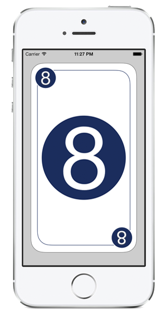

About Scrum Card Deck
Scrum Card Deck is a digital version of Scrum Poker / Planning Poker: a consensus-based technique for estimating and sizing user stories in agile software development. In particular together with the Scrum and Extreme Programming methodologies.
During sprint planning in Scrum, the team can use these poker cards as a unit of measure for estimating the overall size of a user story, feature, or even associated piece of work. This tool helps the team assign points, in a relaxed manner, to stories or tasks. Having points assigned to every story will, in turn, help the team estimate how long it will take to complete each task, what story can be triangulated, and what goes into the next iteration. This tool is a consensus-based technique for estimating and coming to agreement on the projected workload in a sprint backlog.

Gestures
While in card view (pictured above), a number of gestures are supported:
Metrics and Privacy
In additional to several UI improvements metrics have been added to the 1.1 version. Anonymous information is gathered on the background to determine what the preffered deck view is (list or pick), how often someone ends up in the help view (to determine if the gestures in the card view need to be improved) and how swipe gestures are being used. This information is cumulatively and can not be used to identify the application of the user. This information will only be used to improve the application.
Support or Contact
In case you experience any issues with the app, have any feature requests or have any general feedback, you can leave them here.